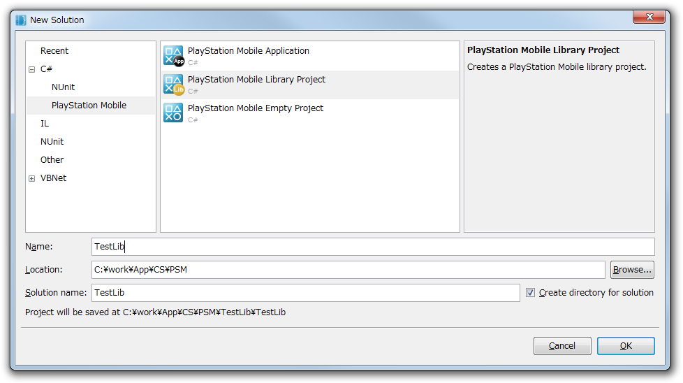
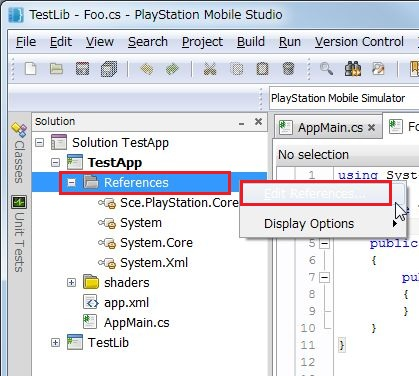
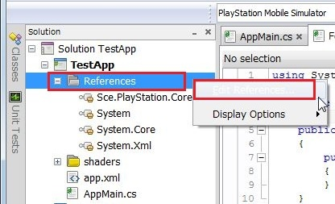
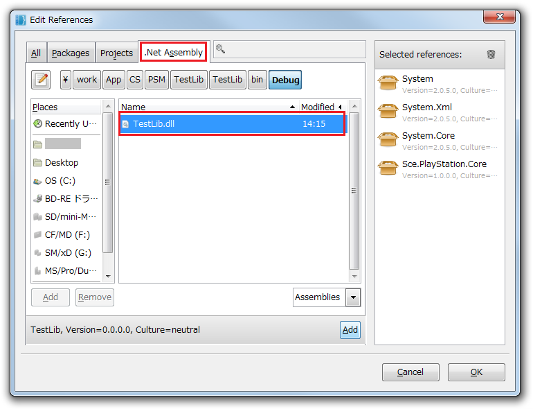
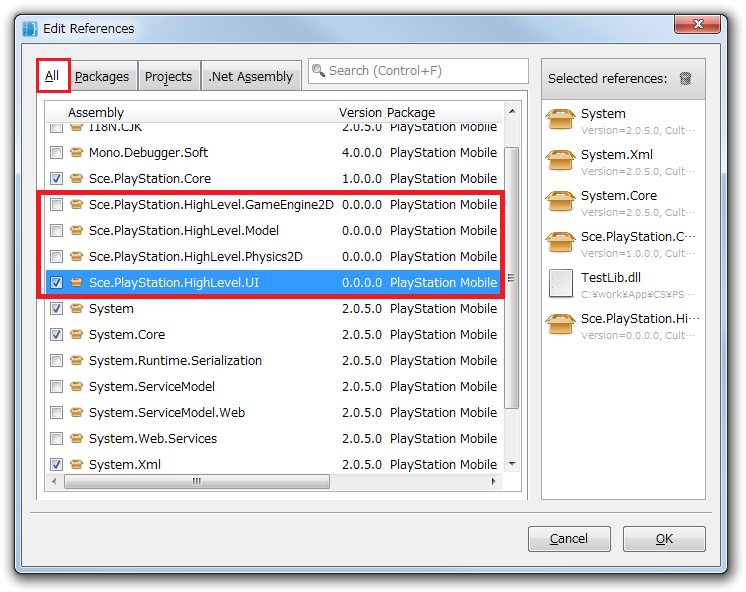

This document explains the basic usage for PSM Studio Integrated Development Environment.
Contents
To debug a program, first set the breakpoints.
To set the breakpoints, in the code editor click on the area on the left side at the places where you want to position the breakpoints. When you click, a red circle will be shown.

When the breakpoints are set, the program will execute with [Menu] - [Run] - [Debug] (debug execution is also possible with the F5 key).
When the program is executed, it will stop at the locations where the breakpoints were positioned.
When the program stops, the program can be executed one line at a time by pressing the F10 key (this is called step execution).

By pressing the F11 key in the code that is calling a function, the processing will proceed within the function. The processing will proceed to outside of the function with Shift+F11.
To resume the program, press the F5 key.
To view the variable content, select [Menu] - [View] - [Debug Window] - [Local Variable].

By clicking on the list in the window, the variable content can be viewed.
To view the call history, select [Menu] - [View] - [Debug Window] - [Call Stack].

The function call history will be shown in the window.
To create a new library, use the following procedure.
- Select [Menu] - [File] - [New] - [Solution...].
- In the tree menu on the left side of the dialog screen, select [C#] - [PlayStation Mobile], then in the controls on the right, select [PlayStation Mobile Library Project].
- Name the library, then press the OK button.

To add a library project file to a solution, use the following procedure.
- In the Solution window, select [Solution], right-click, then select [Add] - [Add Existing Project...].

- Select the project file you want to add in the dialog, then press the [Open] button. This will add the project file to the solution.

- The next step is to set a library reference in the original project file. In the Solution window, select [References] where the project files are, right-click, then select [Edit References].

- Select the Projects tab in the dialog screen, place a check next to the project file you want to add, and press the OK button.

- Then, by adding the library namespace to the source code with using, the APIs of the library will be usable.
using System; using TestLib; //<--here namespace TestApp { public class AppMain { ...
This is an explanation of the method for adding a compiled library to a solution.
- In the Solution window, select [References] for the project files, right-click, then select [Edit References].

- Select the [.Net Assembly] tab in the dialog screen. Select the library you want to add, then press the [Add] button.
To use the standard UIs and physics libraries, etc. provided in the PSM SDK, select the [All] tab, then place a check next to the libraries you want to use.

- Then, by adding the library namespace to the source code with using, the APIs of the library will be usable.